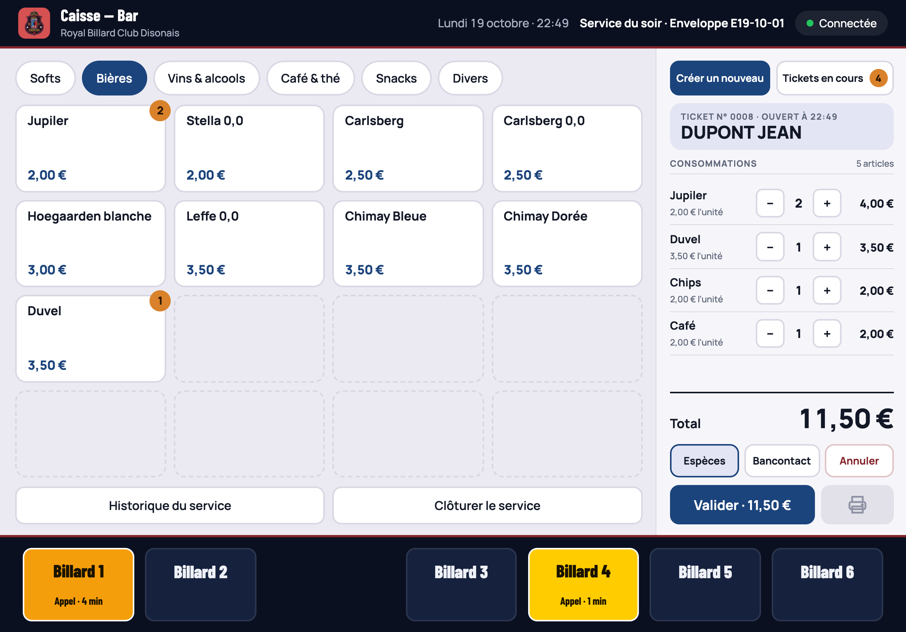

RBC Disonais · Barman
La caisse
du bar
Ouvrir le service, servir les clients, encaisser et préparer l'enveloppe : tout se fait sur la tablette, du bout du doigt.

Royal Billard Club Disonais asbl · Chalet Bonvoisin · DisonÀ garder près de la tablette du bar